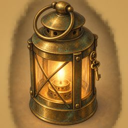

Curios
Twelve rare treasures found in expedition chambers, kept for good through every Rewind and Era.
On this page
Warning This page lists every curio, including the rare ones.
A curio is a small wright-made treasure found, very rarely, in an expedition chamber. Once found, it is kept for good: through every Rewind and even through the Grand Winding. Each gives a permanent boost.
There are twelve curios: eight common and four rare. The collection is shown in the Journal tab.
All twelve
| Curio | Boost (first copy) | Rarity |
|---|---|---|
| Ottilie's thimble | +10% to everything wind-ups gather | Common |
| Wright's whetstone | +10% swarm attack | Common |
| Patched shell plate | +10% swarm health | Common |
| Spare mainspring | +10% Hatchery speed | Common |
| Cracked lamp glass | +10% to the lantern moth's light | Common |
| Folded map scrap | Chambers cost 10% fewer Gearshards | Common |
| Brass tally stick | +10% Aether from Rewinds | Common |
| Wax-sealed oilcan | +10% Oil, Brass and Springs storage | Common |
| Pendulum bob | +5% how often swarms strike | Rare |
| Keeper's key ring | +10% Gearshard drops | Rare |
| Music-box comb | +10% what floors pay | Rare |
| Ottilie's lamp | +10% time the hive works while you are away | Rare |
Duplicates
Finding a curio you already have makes it 15% stronger, and the boost compounds. A +10% curio becomes +11.5% with a second copy, then about +13.2% with a third.
The odds
Curios are rare. A cleared chamber at your current floor has a 0.8% chance of holding one. For every level the chamber is below your floor, the chance falls by 0.04 percentage points, and chambers 20 or more levels below your floor hold none. From chamber level 40, one find in five is a rare curio, so the four rare ones come only from high chambers.
High chambers are worth their extra Gearshards, and the best hunting ground is just below the wall you are on.
| Chamber level relative to your floor | Chance of a curio |
|---|---|
| At your floor | 0.8% |
| 5 below | 0.6% |
| 10 below | 0.4% |
| 15 below | 0.2% |
| 20 or more below | None |
Hunting curios
- Lucky Dust Salvage doubles the chance, at the price of more Gearshards.
- Curio hunt (a switch on the Chart-reader helper) runs suitable chambers automatically when your climb has stalled. See Helpers and automation.
- The Keeper's key ring and Folded map scrap curios themselves make Gearshards go further, which helps with the hunt.
Note The Achievements "A curious find", "Collector" and "Cabinet of curios" are for finding your first curio, six different curios and all twelve. They are through Google Play Games and entirely optional.
See Equipment and expeditions for how chambers work.